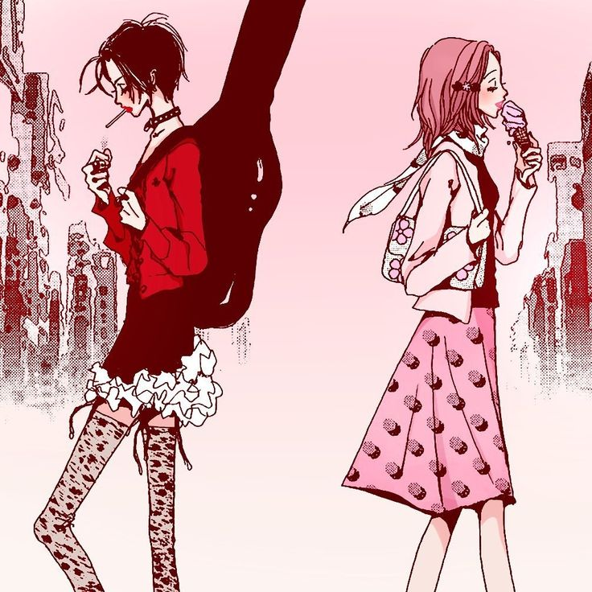

"Nana" é um manga envolvente de Ai Yazawa que narra a vida de duas jovens, ambas chamadas Nana, que se encontram por acaso em um
trem para Tóquio. Nana Komatsu, uma otimista em busca de amor, e Nana Osaki, vocalista da banda punk "Black Stones", embarcam em
uma jornada de amizade, desafios amorosos e autodescoberta na pulsante cidade de Tóquio.
O manga explora as complexidades
da vida adulta, relacionamentos e a poderosa influência da música, oferecendo uma narrativa rica em emoções e desenvolvimento de
personagens. Mesmo incompleto devido à saúde da autora, "Nana" deixa uma marca duradoura.
Nana
Sinopse de Nana☆

Nana Komatsu☆
Ela é uma jovem romântica e sonhadora que se muda para Tóquio em busca de amor e uma nova vida. Conhecida como "Hachi",
Nana Komatsu é contrastada com a outra protagonista do mangá, Nana Osaki.
Hachi é uma personagem otimista, por vezes ingênua, que enfrenta desafios na vida amorosa e nas amizades. Ela busca estabilidade
emocional e muitas vezes se depara com escolhas difíceis no decorrer da história. Sua jornada de autodescoberta é marcada por
relacionamentos complicados, incluindo sua amizade próxima com Nana Osaki e seus envolvimentos românticos.
Ao longo da trama, Nana Komatsu é um elemento vital na construção da narrativa, oferecendo uma perspectiva diferente de Nana Osaki e
contribuindo para a complexidade emocional da história. A dualidade entre as duas Nanas, suas amizades e desafios pessoais formam a
base de "Nana", tornando-a uma obra rica em emoções e experiências de vida.
Nana Osaki☆
Ela é uma vocalista talentosa e carismática, conhecida por seu estilo punk e atitude rebelde. Nana Osaki é uma figura central
na trama, desempenhando um papel fundamental na formação e liderança da banda punk Black Stones.
Nascida em uma cidade do interior, Nana deixa sua cidade natal para seguir seu sonho de se tornar uma estrela do rock em Tóquio.
Sua história é marcada por relacionamentos complexos, especialmente com Ren Honjo, um guitarrista talentoso e seu namorado
inicialmente, que mais tarde se junta à banda rival Trapnest.
A personalidade forte e independente de Nana Osaki é equilibrada por uma vulnerabilidade e profundidade emocional que se revela ao
longo da narrativa. Sua jornada é caracterizada por desafios no mundo da música, amizades profundas e a busca constante por sua
identidade e felicidade.
A relação entre as duas protagonistas, ambas chamadas Nana (sendo Nana Komatsu a outra), é um dos aspectos centrais da trama,
destacando as complexidades da amizade feminina e as diferentes abordagens à vida. Nana Osaki representa a força e a paixão no
contexto da cena musical de Tóquio, tornando-se uma personagem cativante e simbólica ao longo da história.
Músicas☆
-rose
-without you
-zero
-scream
-Take me out
-Kuroi Namida
-I'm addicted to you
-lucy
Os Black Stones, a banda fictícia do mangá "Nana", liderada pela carismática Nana Osaki, lançou uma série de músicas que capturam a essência rebelde e apaixonada da cena musical de Tóquio. Cada canção é um reflexo das experiências, emoções e desafios enfrentados pelos membros da banda ao longo de sua jornada. No total, a banda lançou 8 músicas.
Black Stones☆
nana
nobuo
shinichi
yasushi